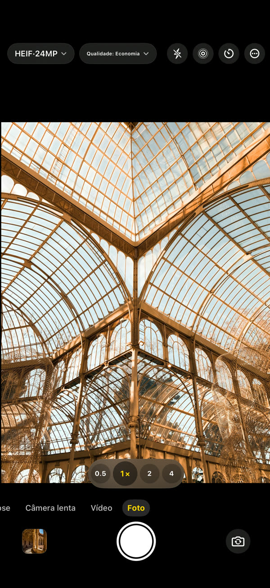
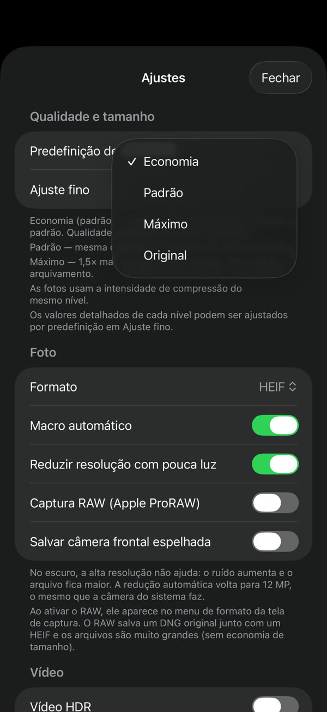
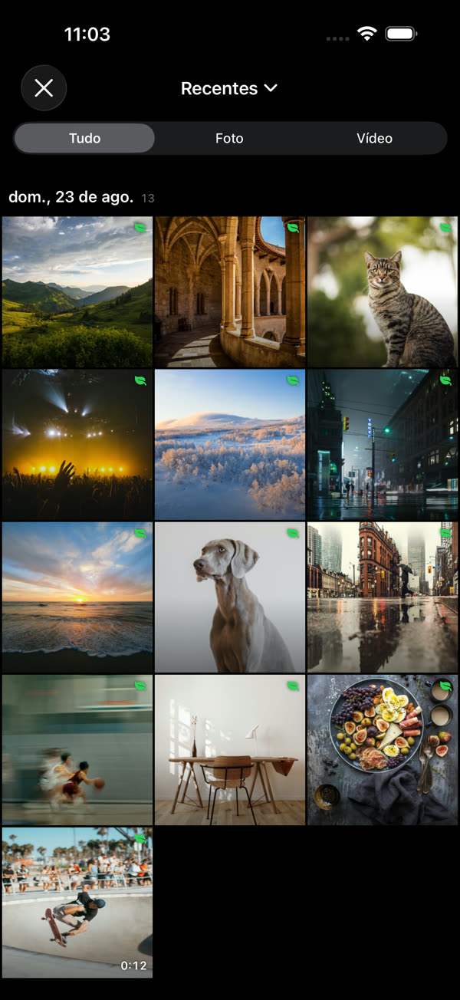
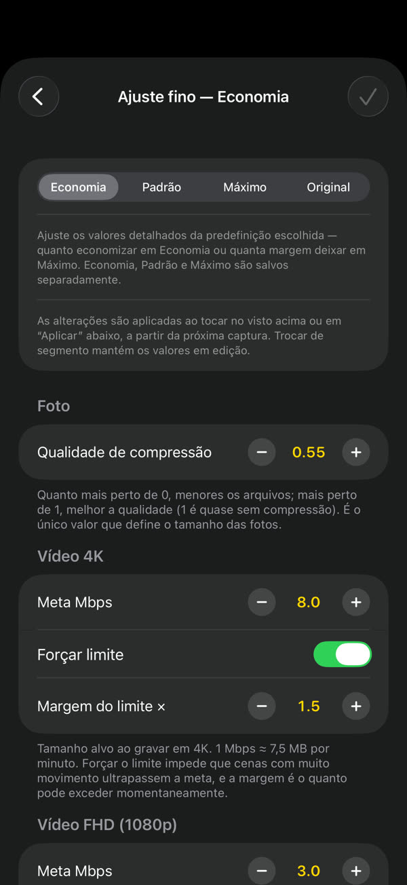
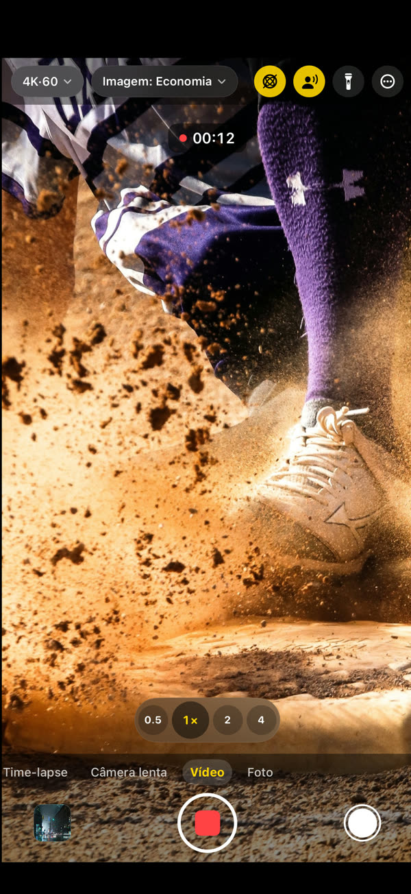

GramCamera
A mesma cena, arquivo menor.
O GramCamera fotografa como a câmera do sistema, mas salva arquivos menores. Reduz o tamanho sem perda visível de qualidade: o mesmo armazenamento rende muito mais.
Baixar na App StoreiOS 17 ou posterior · iPhone e iPad

A cada foto, cerca de 60% menos espaço.
Foto3,7 MB → 1,5 MB~60%
Vídeo 4K169 MB → 60 MB / min64%
Vídeo FHD60 MB → 23 MB / min62%
Escolha, fotografe e veja a economia.




Tudo de que você precisa, incluído.
Você decide quanto economizar
Economia, Padrão ou Máximo. O ajuste fino define o tamanho-alvo por resolução
Direto no app Fotos
Sem fototeca separada. Suas capturas vão para o app Fotos do sistema
Dá para ver o quanto economizou
Cada captura mostra o quanto ficou menor que na câmera do sistema
Uma câmera de verdade
Foto, vídeo, câmera lenta, time-lapse, 4K 60 fps, vídeo HDR, áudio espacial, lentes e macro
Fica no seu aparelho
As capturas ficam no aparelho e na sua fototeca. Sem conta, sem login — Privacidade